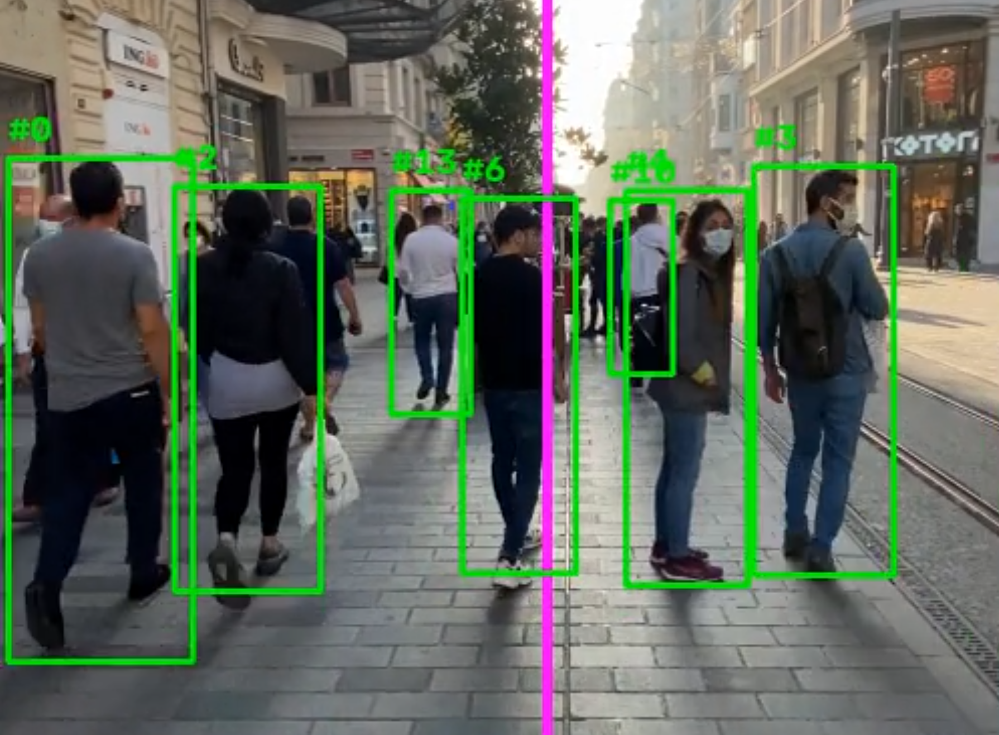
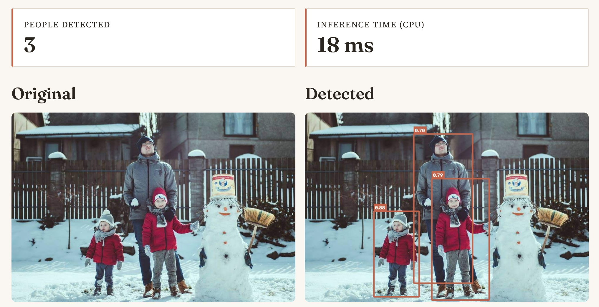

🚶 People Counter
Local, CPU-only person detection and directional counting — deep-learning object detection plus multi-object tracking, wrapped in an interactive Streamlit app.
Live demo: people-counter-yolox.streamlit.app · GitHub Repository


Video mode — each tracked person keeps a stable ID across frames; the magenta line is a configurable counting gate (IN / OUT / NET).
Image mode — one-shot detection with per-box confidence scores.Why this project
The portfolio previously had a "Person Counter" that was actually a Haar-Cascade face counter mislabeled as a person counter — it couldn't count anyone facing away from the camera, and wasn't a real detector at all. I rebuilt it from scratch as an actual person detector (YOLOX-nano, deep learning) with multi-object tracking, instead of quietly patching the old one.
Together with the Erythrocyte Shape Analyzer, this shows two different ends of my computer vision work: classical image processing there (Otsu thresholding, contour detection, ellipse fitting), versus a modern deep-learning object detector plus a multi-object tracker here. It's also a useful contrast with the Cuneiform Sign Classifier: that project classifies an already-cropped image, while this one has to first find and localize every person in the frame before anything else can happen.
What it does
- Image mode — upload a photo, get back per-person bounding boxes with confidence scores and a total count.
- Video mode — upload a clip, draw a counting line anywhere in the frame, and get IN/OUT/NET counts of people crossing it, with each tracked person keeping a stable ID across frames.
A bundled sample image and video let a visitor try both modes without needing their own file.
How it works
- Detection: YOLOX-nano (COCO-pretrained, ONNX export), run locally via ONNX Runtime on CPU. Only the "person" class is kept.
- Tracking (video mode):
trackers'sByteTrackTracker, associating detections frame-to-frame by IoU. - Line-crossing counting: a small, pure-Python module that watches which side of a user-drawn line each tracked person's centroid is on, and counts a crossing whenever that side flips — independent of any CV/ML code, unit-tested with synthetic positions, no video or model weights required.
Measured accuracy
Evaluated against a real labeled sample (62 people-containing images from the public coco128 dataset), matching detections to ground-truth boxes at IoU ≥ 0.5 — numbers are regenerated from scratch by evaluate.py, not estimated:
| Metric | Value |
|---|---|
| Precision | 0.825 |
| Recall | 0.520 |
| F1 | 0.638 |
| CPU inference speed | ~95 FPS (10.5 ms/image) |
Limitations, stated plainly
- Recall is the honest weak point. YOLOX-nano is the smallest model in its family (built for speed over accuracy) and struggles most on dense crowd scenes with many small, overlapping people. A larger YOLOX variant would trade some CPU speed for materially better recall.
- The counting line only works if it's oriented against the actual direction of motion in the video. A camera looking across a path (people moving left/right) needs a vertical line; a camera looking down a corridor (people moving toward/away from camera) needs a horizontal one. There's no universally-correct default — this is why the line is configurable with sliders rather than fixed.
- Free-tier CPU-only hosting means very long or very high-resolution video uploads are capped (frames are downscaled before processing, and there's a hard length limit) to avoid exhausting the host's memory.
Data security & privacy
All inference runs locally — no image or video is ever sent to a third-party API. Uploaded video is written to a private temp file only because OpenCV needs a real file path to read it, and that file is deleted immediately after processing, even if something goes wrong. Nothing uploaded is logged, stored, or kept between requests.
Tech stack
Python · Streamlit · ONNX Runtime · OpenCV · trackers (ByteTrack) · supervision · imageio-ffmpeg
License
Code is MIT-licensed. The bundled YOLOX-nano weights are Apache License 2.0 (Megvii-BaseDetection/YOLOX), used unmodified for inference only — chosen specifically over Apache/AGPL alternatives like Ultralytics YOLOv8 to keep the whole repo under a permissive, MIT-compatible license even when deployed as a publicly network-accessible app.